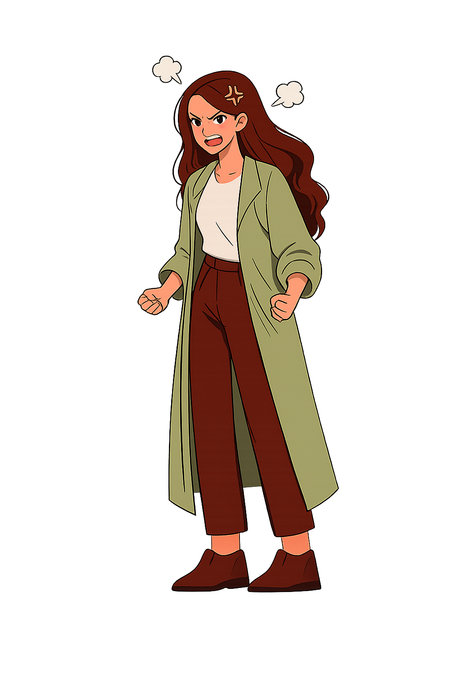
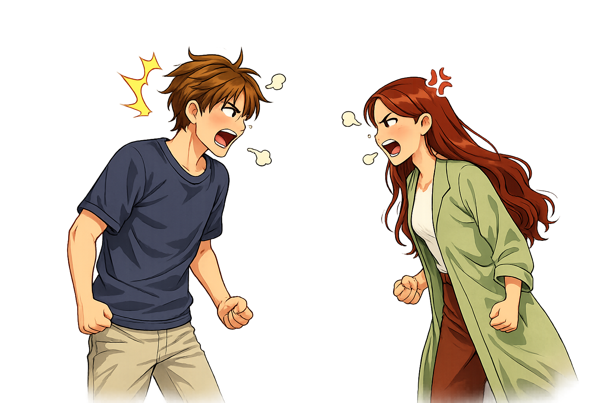

Alex stays asleep a little longer until he finally wakes up, and they continue to watch the movie as if nothing has happened. Theres silence between them, but Lilas mind wont shut up. Its begging for answers.
When she finally speaks, she doesnt raise her voice. Instead, she lays the phone on the table between them like evidence.
"Whos Maya?"

Alex freezes.
"Did you go through my phone?"
She can tell hes offended, but shes hurt too. And that didnt answer the question.
"Who is she?" Lila asks again.
Alex explains that Maya is a coworker helping him plan a surprise. A surprise for Lila. It was a secret never meant to cause suspicion, but to surprise. He insists theres nothing going on between them, but that theres clearly now something going on between us.
"Lila, you went through my phone. You broke my trust. Do you not respect my privacy?"
Lila and Alex exploded into a fight. Even if Alex was telling the truth, the damage was done. Alex storms off, slamming the door behind him. Lila realizes that whether they stay together or not, their relationship will never be the same again, at least not for a while.
